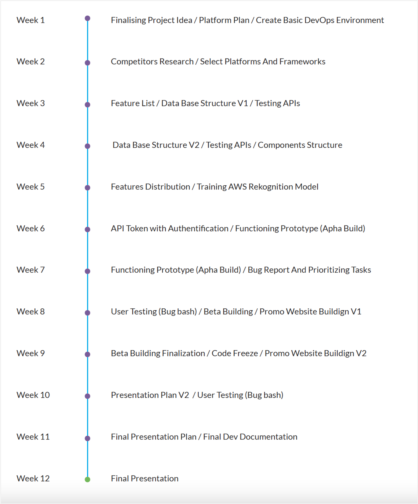

About Sift
Sift is a waste management mobile application that educates users on how to recycle items correctly. This MVP focuses on recycling rules and regulations in Vancouver, BC area.
Project information
Duration:
12 weeks
My role:
Project Manager & UX Designer
Team size:
3 Developers & 4 Designers
Platform:
Mobile Application
Project Outline
Sift is an educational waste management mobile application that helps users make informed recycling decisions by locating convenient recycling centers, filtering search functions, and allowing for further education with an object scanning feature. The application clearly explains which items go into which bins. Since the project focuses on the Vancouver area, it will comply with the recycling regulations in this area.
My Role
In this project, I was the project manager and a UX designer. I was responsible for planning weekly sprints, conducting primary and secondary research, analyzing data gathered from surveys, creating personas, designing user flow, and making wireframes for the object recognition feature and home page. I was also in change of creating promotional video and marketing assets.
The Process
In this project we followed a human-centered design process starting from primary and secondary research. We used Miro and InVision for brainstorming our ideas, analyzing the data gathered from the research and locking the features of the application.
Research
People do not know how to recycle their waste correctly, what can be recycled or what to do with it.
" One of the biggest challenges for recycling programs is dealing with the garbage or other non-recyclable materials that end up in the system." - CBC News
After conducting secondary research and a survey our team found out that 70% of people are not sure how to recycle most of their garbage and this is why they put everything in general waste.
Competitors Research
Tools
The Features
Scan Objects
Scan an object with your camera, the application will identify different materials and tell you how to recycle them.
Find Centers
Local recycling centers can be found near you, where you can bring items that can't be easily disposed of.
Search Items
You can search by the item name and get some options on how this item can be recycled in the Vancouver BC area.
Personas
User Flow
For the project scope we had 4 main features: serach by object name (by using open sourse API), search by location (using google maps), scan by object (trained our own image recognition model) and profile where users can earn badges and earn points for recycling correctly.
We wanted the application to be engaging and intuitive to use, which is why on every page there was a call-to-action button to the next feature for the user to try out and see if it is more convenient for them.
Wireframes
Home screen is where the user will land after signing up for the application. Welcome to Sift section has two call to action buttons for the scan and search feature. For the monetization purposes there is a promotion section where environmentally friendly businesses can request to place an advertisement. Did you know section will display fun facts to educate the users about recycling.
Search by item name offers two ways of searching: by popular search or by the name of an item: eg. Avalon milk bottle. In the next face we want to add barcode recognition. Camera results not found page will be shown when the object recognition feature will not have a result to show, in that case we will have CTA for the search by word feature.
High Fidelity Screens

Result for organic does not have an option to find a recycling center because there is no place where you can bring your organic waste in person. This is why we have a link to “how to create a compost bin” article to educate the users about organic waste and how to dispose of it correctly. Result for plastic item page has two scenarios, either the user can find a blue bin nearby or they can take their plastic items to a recycling station. As we can not predict how the users will take a picture, there is a camera result not found screen that has some tips on how to take a better picture.
Complex item result shows a result for an object that has more than one material. We trained our mode for the Tim Hortons cup by uploading around 200 pictures of this cup from different perspectives and with different lighting to train the object recognition model. New user profile page shows how the profile page will look for a new user who did not earn any badges and scanned any objects. The Recycling Centres Locations screen uses geolocation to show nearby recycling centers. In cases when the geolocation is not working the user can input their address manually to search for the nearby recycling centre.
App Logo
Sift's logo is a combination of two geometric shapes, which are similar in appearance, but with different levels of opacity. The logo conveys the idea that many items migh be made from similar materils but have to be recycled differently.
Typography
The Lato typeface was chosen for the application because it is a sans-serif typeface that gives the application a modern appearance. This typeface is very readable across various screen sizes, resolutions, and media types, which increases legibility.
Color Palette
The chosen colors for Sift convey the meaning of cleanliness and awareness about environment protection.

UI: Buttons & Nanvigation
We use curves and a light gradient to direct users' attention and convince them to press the scan button, the app's key feature.
Illustrations
The design team created a set of illustrations and icons for making the recycling instructions more clear and conveying the problem that the application is trying to solve.
Design Plan

Our team consisted of 7 people and to be more productive, we decided to create a separate plan for developers and designers. I was the project manager and hence in charge of planning the project. For design plan I worked colsely with a desig lean to plan our weekly sprints.
Development Plan
We had to keep the development plan not very precise since most of the work would be dependent on the design team. I worked closely with the dev lead to plan and understand what features we will be able to deliver within a given timeframe.
System Architecture
One of the requirements was to make the app accessible to both Android and IOS users, that's why we built it with React Native. This diagram shows how the application works on the front and the back-end.
Promotional Video
This is the promotional video that I have created for the promotion and the final presentation of the Sift project. I used illustrator to edit and separate the layers of the illustrations created by the design team. I used Premier Pro to edit the video and adding the sound effects.
Future RoadMap
If our team was to continue with this project in the future we would focus on other steps, such as tracking most scanned items to understand what users find confusing to recycle, expanding the list of recognized materials and trying to collaborate with charities to promote their services in our application. We would also focus on expending available badges and adding some value to them (eg. points that can be used for discounts in environmentally friendly stores) to motivate the users to use the application.
Retrospective
Overall, I am pleased with the project's outcome. As a project manager, I prepared the meetings to ensure they are efficient and allow each member of the team to share ideas. Sometimes we had different opinions in the design process. To select the best design solution, each designer pitched their idea and the team voted for the strongest presentation. The camera and the search features that I was working on had 3 major iterations due to the constraints from the development team, as not everything that we planned was possible to implement within the given time frame. This experience has taught me why I must be very flexible as a designer and not be afraid to come up with new ideas.
What can be improved
I believe our team was very successful in working together, meeting all the deadlines on time and clearly communicating with each other. One of the areas where we could improve was spending more time planning our design process. While creating the wireframes, we had four designers working on different features of the application, and unfortunately we did not consider creating components to make it faster and easier. However we learned our lesson and when we were creating high fidelity screens we created all the necessary components which resulted in efficient and consistent designs